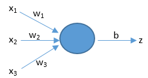
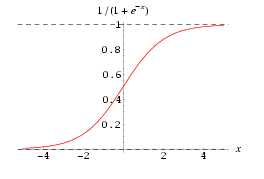

<!DOCTYPE html>
<html>
<head><meta name="generator" content="Hexo 3.8.0">
  <meta charset="utf-8">

  <!-- PACE Progress Bar START -->
  
    <script src="https://raw.githubusercontent.com/HubSpot/pace/v1.0.2/pace.min.js"></script>
    <link rel="stylesheet" href="https://github.com/HubSpot/pace/raw/master/themes/orange/pace-theme-flash.css">
  
  

  <!-- PACE Progress Bar START -->

  
  <title>人工智能初识 2.2: 神经网络是如何进行预测的？ | Blog of Geowind</title>
  <meta name="viewport" content="width=device-width, initial-scale=1, maximum-scale=1">
  
  <meta name="keywords" content="人工智能神经网络">
  
  
  
  
  <meta name="description" content="线性回归预测，逻辑回归分类">
<meta name="keywords" content="人工智能,神经网络">
<meta property="og:type" content="article">
<meta property="og:title" content="人工智能初识 2.2: 神经网络是如何进行预测的？">
<meta property="og:url" content="http://geowind.org/GeowindBlog/archives/b5cace6d.html">
<meta property="og:site_name" content="Blog of Geowind">
<meta property="og:description" content="线性回归预测，逻辑回归分类">
<meta property="og:locale" content="default">
<meta property="og:image" content="http://geowind.org/GeowindBlog/assets/2_2_1.png">
<meta property="og:image" content="http://geowind.org/GeowindBlog/assets/2_2_2.png">
<meta property="og:updated_time" content="2018-10-24T02:56:46.000Z">
<meta name="twitter:card" content="summary">
<meta name="twitter:title" content="人工智能初识 2.2: 神经网络是如何进行预测的？">
<meta name="twitter:description" content="线性回归预测，逻辑回归分类">
<meta name="twitter:image" content="http://geowind.org/GeowindBlog/assets/2_2_1.png">
  
    <link rel="alternate" href="/atom.xml" title="Blog of Geowind" type="application/atom+xml">
  
  <link rel="icon" href="/GeowindBlog/css/images/favicon.ico">
  
    <link href="//fonts.googleapis.com/css?family=Source+Code+Pro" rel="stylesheet" type="text/css">
  
  <link href="https://fonts.googleapis.com/css?family=Open+Sans|Montserrat:700" rel="stylesheet" type="text/css">
  <link href="https://fonts.googleapis.com/css?family=Roboto:400,300,300italic,400italic" rel="stylesheet" type="text/css">
  <link href="https://cdn.bootcss.com/font-awesome/4.6.3/css/font-awesome.min.css" rel="stylesheet">
  <style type="text/css">
    @font-face{font-family:futura-pt;src:url(https://use.typekit.net/af/9749f0/00000000000000000001008f/27/l?subset_id=2&fvd=n5) format("woff2");font-weight:500;font-style:normal;}
    @font-face{font-family:futura-pt;src:url(https://use.typekit.net/af/90cf9f/000000000000000000010091/27/l?subset_id=2&fvd=n7) format("woff2");font-weight:500;font-style:normal;}
    @font-face{font-family:futura-pt;src:url(https://use.typekit.net/af/8a5494/000000000000000000013365/27/l?subset_id=2&fvd=n4) format("woff2");font-weight:lighter;font-style:normal;}
    @font-face{font-family:futura-pt;src:url(https://use.typekit.net/af/d337d8/000000000000000000010095/27/l?subset_id=2&fvd=i4) format("woff2");font-weight:400;font-style:italic;}</style>
    
  <link rel="stylesheet" id="athemes-headings-fonts-css" href="//fonts.googleapis.com/css?family=Yanone+Kaffeesatz%3A200%2C300%2C400%2C700&amp;ver=4.6.1" type="text/css" media="all">
  <link rel="stylesheet" href="/GeowindBlog/css/style.css">

  <script src="https://code.jquery.com/jquery-3.1.1.min.js"></script>

  <!-- Bootstrap core CSS -->
  <link rel="stylesheet" href="https://netdna.bootstrapcdn.com/bootstrap/3.0.2/css/bootstrap.min.css">
  <link rel="stylesheet" href="/GeowindBlog/css/hiero.css">
  <link rel="stylesheet" href="/GeowindBlog/css/glyphs.css">
  

  <!-- Custom CSS -->
  <link rel="stylesheet" href="/GeowindBlog/css/my.css">
  <!-- Google Adsense -->
  
</head>
</html>
<script>
var themeMenus = {};

  themeMenus["/GeowindBlog/"] = "Home"; 

  themeMenus["/GeowindBlog/archives/"] = "Archives"; 

  themeMenus["/GeowindBlog/categories/"] = "Categories"; 

  themeMenus["/GeowindBlog/tags/"] = "Tags"; 

  themeMenus["/GeowindBlog/about/"] = "About"; 

</script>


  <body data-spy="scroll" data-target="#toc" data-offset="50">


  <header id="allheader" class="site-header" role="banner">
  <div class="clearfix container">
      <div class="site-branding">

          <h1 class="site-title">
            
              <a href="/GeowindBlog/" rel="home">
                
              </a>
            
          </h1>

          
            <div class="site-description">Everyone can make a difference , Geowind Here</div>
          
            
          <nav id="main-navigation" class="main-navigation" role="navigation">
            <a class="nav-open">Menu</a>
            <a class="nav-close">Close</a>
            <div class="clearfix sf-menu">

              <ul id="main-nav" class="nmenu sf-js-enabled">
                    
                      <li class="menu-item menu-item-type-custom menu-item-object-custom menu-item-home menu-item-1663"> <a class="" href="/GeowindBlog/">Home</a> </li>
                    
                      <li class="menu-item menu-item-type-custom menu-item-object-custom menu-item-home menu-item-1663"> <a class="" href="/GeowindBlog/archives/">Archives</a> </li>
                    
                      <li class="menu-item menu-item-type-custom menu-item-object-custom menu-item-home menu-item-1663"> <a class="" href="/GeowindBlog/categories/">Categories</a> </li>
                    
                      <li class="menu-item menu-item-type-custom menu-item-object-custom menu-item-home menu-item-1663"> <a class="" href="/GeowindBlog/tags/">Tags</a> </li>
                    
                      <li class="menu-item menu-item-type-custom menu-item-object-custom menu-item-home menu-item-1663"> <a class="" href="/GeowindBlog/about/">About</a> </li>
                    
              </ul>
            </div>
          </nav>


      </div>
  </div>
</header>


  <div id="container">
    <div id="wrap">
            
      <div id="content" class="outer">
        
          <section id="main" style="float:none;"><article id="post-人工智能初识 2.2：神经网络是如何进行预测的？" style="width: 66%; float:left;" class="article article-type-post" itemscope="" itemprop="blogPost">
  <div id="articleInner" class="clearfix post-1016 post type-post status-publish format-standard has-post-thumbnail hentry category-template-2 category-uncategorized tag-codex tag-edge-case tag-featured-image tag-image tag-template">
    
    
      <header class="article-header">
        
  
    <h1 class="thumb" itemprop="name">
      人工智能初识 2.2: 神经网络是如何进行预测的？
    </h1>
  

      </header>
    
    <div class="article-meta">
      
	Posted on <a href="/GeowindBlog/archives/b5cace6d.html" class="article-date">
	  <time datetime="2018-10-24T02:56:46.000Z" itemprop="datePublished">October 24, 2018</time>
	</a>

      
	<span id="busuanzi_container_page_pv">
	  本文总阅读量<span id="busuanzi_value_page_pv"></span>次
	</span>

    </div>
    <div class="article-entry" itemprop="articleBody">
      
        <p>线性回归预测，逻辑回归分类<br><a id="more"></a></p>
<h1 id="人工智能教程（二）-神经网络是如何进行预测的？"><a href="#人工智能教程（二）-神经网络是如何进行预测的？" class="headerlink" title="人工智能教程（二） 神经网络是如何进行预测的？"></a>人工智能教程（二） 神经网络是如何进行预测的？</h1><p>上一篇文章中我们已经知道了如何将数据输入到神经网络中。那么神经网络是如何根据这些数据进行预测的呢？我们将一张图片输入到神经网络中，神经网络是如何预测这张图中是否有猫的呢？</p>
<p>这个预测的过程其实只是基于一个简单的公式：z = dot(w,x) + b。</p>
<p>上面公式中的x代表着输入特征向量，假设只有3个特征，那么x就可以用（x1，x2，x3）来表示。如下图所示。w表示权重，它对应于每个输入特征，代表了每个特征的重要程度。b表示阈值[yù zhí]，用来影响预测结果。z就是预测结果。公式中的dot()函数表示将w和x进行向量相乘。。我们现在只需要知道上面的公式展开后就变成了z = (x1 <em> w1 + x2 </em> w2 + x3 * w3) + b。<br><br>那么神经网络到底如何利用这个公式来进行预测的呢？下面通过一个实例来帮助大家理解。</p>
<p>假设周末经纬度举办一个关于机器学习的研讨会，我们要预测你会不会来参加。假设是否影响你参加这次研讨会的因素有三个，时间，天气，内容。这三个元素就可以看作是3个输入特征，那你对三者的重视程度就是三个权重。如果时间确定为很早，天气很差，内容却很精彩，那么三个特征可以表示（0，0，1），有设关于你们对于三者的重视程度都知道为（2，2，7）并设阈值b是-5，则 = (x1 <em> w1 + x2 </em> w2 + x3 <em> w3) + b = (0 </em> 2 + 0 <em> 2 + 1 </em> 7) + (-5) = 2；z大于0就预测你会参见研讨会。</p>
<p>又如果天气特别查，刮起了台风，这个时候你对三个因素的重视程度就改变为（2，7，2）及你对天气重视程度很高，那么z = (x1 <em> w1 + x2 </em> w2 + x3 <em> w3) + b = (0 </em> 2 + 0 <em> 7 + 1 </em> 2) + (-5) = -3；z小于0则表示你不回去。</p>
<p>所以<strong>最最最简化</strong>的说预测图片里有没有猫也是通过基于上面的公式。经过训练的神经网络会得到一组与猫相关的权重。当我们把一张图片输入到神经网络中，图片数据会与这组权重以及阈值进行运算，结果大于0就是有猫，小于0就是没有猫。（实际过程这里不做详解）</p>
<p>然而在实际的神经网络中，我们会在上述公式外面再套上一个函数，这个函数称为激活函数，可以先看一下叫做sigmoid的激活函数：<br><br>由图像显而易见的是Sigmoid函数将任何连续的数值映射到[0,1]之间，这样子获得预测结果更加容易理解了，0即不是希望值，1即是希望值。希望更深刻的了解线性回归，逻辑回归的知识可以参考另一篇博客。</p>

      
    </div>
    <footer class="entry-meta entry-footer">
      
	<span class="ico-folder"></span>
    <a class="article-category-link" href="/GeowindBlog/categories/人工智能初识/">人工智能初识</a>, <a class="article-category-link" href="/GeowindBlog/categories/人工智能初识/（二）/">（二）</a>

      
  <span class="ico-tags"></span>
  <ul class="article-tag-list"><li class="article-tag-list-item"><a class="article-tag-list-link" href="/GeowindBlog/tags/人工智能/">人工智能</a></li><li class="article-tag-list-item"><a class="article-tag-list-link" href="/GeowindBlog/tags/神经网络/">神经网络</a></li></ul>

      
            
      
        
	<div id="comment">
		<!-- 来必力City版安装代码 -->
		<div id="lv-container" data-id="city" data-uid="MTAyMC8yOTQ4MS82MDQ5">
		<script type="text/javascript">
		   (function(d, s) {
		       var j, e = d.getElementsByTagName(s)[0];

		       if (typeof LivereTower === 'function') { return; }

		       j = d.createElement(s);
		       j.src = 'https://cdn-city.livere.com/js/embed.dist.js';
		       j.async = true;

		       e.parentNode.insertBefore(j, e);
		   })(document, 'script');
		</script>
		<noscript>为正常使用来必力评论功能请激活JavaScript</noscript>
		</div>
		<!-- City版安装代码已完成 -->
	</div>


      
    </footer>
  </div>
  
    
<nav id="article-nav">
  
    <a href="/GeowindBlog/archives/e2a94187.html" id="article-nav-newer" class="article-nav-link-wrap">
      <strong class="article-nav-caption">Newer</strong>
      <div class="article-nav-title">
        
          人工智能初识 2.3：神经网络如何判断自己预测得是否准确
        
      </div>
    </a>
  
  
    <a href="/GeowindBlog/archives/8c3e5841.html" id="article-nav-older" class="article-nav-link-wrap">
      <strong class="article-nav-caption">Older</strong>
      <div class="article-nav-title">人工智能初识 1.4：如何将数据输入到神经网络中</div>
    </a>
  
</nav>

  
</article>

<!-- Table of Contents -->

  <aside id="sidebar">
    <div id="toc" class="toc-article">
    <strong class="toc-title">Contents</strong>
    
      <ol class="nav"><li class="nav-item nav-level-1"><a class="nav-link" href="#人工智能教程（二）-神经网络是如何进行预测的？"><span class="nav-number">1.</span> <span class="nav-text">人工智能教程（二） 神经网络是如何进行预测的？</span></a></li></ol>
    
    </div>
  </aside>
</section>
        
      </div>
      <footer id="footer" class="site-footer">
  

  <div class="clearfix container">
      <div class="site-info">
	      &copy; 2018 Blog of Geowind All Rights Reserved.
          
            <span id="busuanzi_container_site_uv">
              本站访客数<span id="busuanzi_value_site_uv"></span>人次  
              本站总访问量<span id="busuanzi_value_site_pv"></span>次
            </span>
          
      </div>
      <div class="site-credit">
        Theme by <a href="https://github.com/iTimeTraveler/hexo-theme-hiero" target="_blank">hiero</a>
      </div>
  </div>
</footer>


<!-- min height -->

<script>
    var contentdiv = document.getElementById("content");

    contentdiv.style.minHeight = document.body.offsetHeight - document.getElementById("allheader").offsetHeight - document.getElementById("footer").offsetHeight + "px";
</script>

<!-- Custome JS -->
<script src="/GeowindBlog/js/my.js"></script>
    </div>
    <!-- <nav id="mobile-nav">
  
    <a href="/GeowindBlog/" class="mobile-nav-link">Home</a>
  
    <a href="/GeowindBlog/archives/" class="mobile-nav-link">Archives</a>
  
    <a href="/GeowindBlog/categories/" class="mobile-nav-link">Categories</a>
  
    <a href="/GeowindBlog/tags/" class="mobile-nav-link">Tags</a>
  
    <a href="/GeowindBlog/about/" class="mobile-nav-link">About</a>
  
</nav> -->
    

<!-- mathjax config similar to math.stackexchange -->

<script type="text/x-mathjax-config">
  MathJax.Hub.Config({
    tex2jax: {
      inlineMath: [ ['$','$'], ["\\(","\\)"] ],
      processEscapes: true
    }
  });
</script>

<script type="text/x-mathjax-config">
    MathJax.Hub.Config({
      tex2jax: {
        skipTags: ['script', 'noscript', 'style', 'textarea', 'pre', 'code']
      }
    });
</script>

<script type="text/x-mathjax-config">
    MathJax.Hub.Queue(function() {
        var all = MathJax.Hub.getAllJax(), i;
        for(i=0; i < all.length; i += 1) {
            all[i].SourceElement().parentNode.className += ' has-jax';
        }
    });
</script>

<script type="text/javascript" src="https://cdnjs.cloudflare.com/ajax/libs/mathjax/2.7.4/MathJax.js?config=TeX-AMS-MML_HTMLorMML">
</script>


  <link rel="stylesheet" href="https://cdnjs.cloudflare.com/ajax/libs/fancybox/2.1.5/jquery.fancybox.min.css">
  <script src="https://cdnjs.cloudflare.com/ajax/libs/fancybox/2.1.5/jquery.fancybox.min.js"></script>


<script src="/GeowindBlog/js/scripts.js"></script>
<script src="https://stackpath.bootstrapcdn.com/bootstrap/3.3.7/js/bootstrap.min.js"></script>
<script src="/GeowindBlog/js/main.js"></script>


  <div style="display: none;">
    <script src="https://s95.cnzz.com/z_stat.php?id=1260716016&web_id=1260716016" language="JavaScript"></script>
  </div>


	<script async src="https://dnqof95d40fo6.cloudfront.net/atw7f8.js">
	</script>


  </div>

  <a id="rocket" href="#top" class=""></a>
  <script type="text/javascript" src="/js/totop.js" async=""></script>
</body>
</html>
